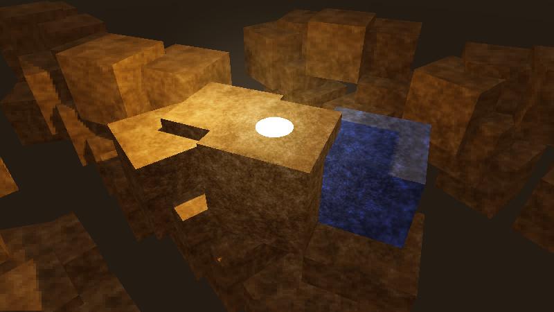

Variable rate shading
Variable rate shading là gì?
Trong các engine kết xuất 3D hiện đại, shader phức tạp hơn nhiều so với trước đây. Sự ra đời của kết xuất dựa trên vật lý, global illumination thời gian thực và các hiệu ứng screen-space đã làm tăng khối lượng shading theo từng pixel cần thực hiện để kết xuất mỗi frame. Ngoài ra, độ phân giải màn hình cũng tăng lên rất nhiều, với 1440p và 4K giờ đây là các độ phân giải mục tiêu phổ biến. Kết quả là tổng chi phí shading khi kết xuất scene thường chiếm một phần đáng kể thời gian kết xuất mỗi frame.
Variable rate shading (VRS) là phương pháp giảm chi phí shading này bằng cách giảm độ phân giải của shading theo từng pixel (còn gọi là shading fragment), trong khi vẫn giữ độ phân giải gốc khi kết xuất hình học. Điều này có nghĩa các cạnh hình học vẫn sắc nét như khi không có VRS. VRS có thể kết hợp với bất kỳ kỹ thuật Khử răng cưa 3D nào (MSAA, FXAA, TAA, SSAA).
VRS cho phép chỉ định chất lượng shading theo từng vùng cục bộ, giúp một số phần của viewport nhận shading chi tiết hơn các phần khác. Điều này đặc biệt hữu ích trong thực tế ảo (VR) để đạt được foveated rendering, trong đó vùng trung tâm của viewport chi tiết hơn các cạnh.
Dưới đây là một scene được kết xuất khi tắt rồi bật rate shading, dùng density map được liên kết ở cuối trang này:

Variable rate shading bị tắt trong scene có texture

Variable rate shading được bật trong scene có texture (chất lượng thấp hơn, nhưng hiệu năng cao hơn)
Khi dùng trong các scene có chi tiết tần số thấp (chẳng hạn scene theo phong cách stylized/low-poly), có thể đạt mức tăng hiệu năng tương tự nhưng ít suy giảm chất lượng hình ảnh hơn:

Variable rate shading bị tắt trong scene không có texture

Variable rate shading được bật trong scene không có texture (chất lượng thấp hơn, nhưng hiệu năng cao hơn)
Hỗ trợ phần cứng
Variable rate shading chỉ được hỗ trợ trên một số GPU nhất định:
Máy tính để bàn:
NVIDIA Turing trở lên (bao gồm dòng GTX 1600)
AMD RDNA2 trở lên (cả GPU tích hợp và GPU rời – bao gồm Steam Deck)
Intel Arc Alchemist trở lên (chỉ GPU rời)
Đồ họa tích hợp Intel không hỗ trợ variable rate shading.
SoC di động:
Snapdragon 888 trở lên
MediaTek Dimensity 9000 trở lên
ARM Mali-G615 trở lên
Tính đến tháng 1 năm 2023, GPU của Apple và Raspberry Pi không hỗ trợ variable rate shading.
Sử dụng variable rate shading trong Godot
Ghi chú
Cả renderer Forward+ và Mobile đều hỗ trợ variable rate shading. VRS có thể dùng ở cả chế độ hiển thị pancake (không phải XR) và XR.
Renderer Compatibility không hỗ trợ variable rate shading. Với XR, bạn có thể dùng foveation level làm giải pháp thay thế.
Trong Project Settings nâng cao, mục Rendering > VRS cung cấp các cài đặt để điều khiển variable rate shading trên root viewport:
Mode: Điều khiển chế độ variable rate shading. Disabled tắt variable rate shading. Texture dùng một texture được tạo thủ công để đặt mật độ shading (xem thuộc tính bên dưới). XR tự động tạo một texture phù hợp cho foveated rendering trong thực tế ảo/thực tế tăng cường.
Texture: Texture dùng để điều khiển mật độ shading trên root viewport. Chỉ được dùng nếu Mode là Texture.
Với các viewport tùy chỉnh, chế độ VRS và texture phải được đặt thủ công trên node class_Viewport.
Ghi chú
Trên phần cứng không được hỗ trợ, không có khác biệt hình ảnh nào khi bật variable rate shading. Bạn có thể kiểm tra phần cứng có hỗ trợ variable rate shading hay không bằng cách chạy trình chỉnh sửa hoặc dự án với tham số dòng lệnh --verbose.
Tạo bản đồ mật độ VRS
Nếu dùng chế độ VRS Texture, bạn phải đặt một texture để dùng làm density map. Nếu không, sẽ không thấy hiệu ứng nào.
Bạn có thể tự tạo VRS density map thủ công bằng trình chỉnh sửa ảnh, hoặc tạo bằng phương pháp khác (ví dụ trên CPU bằng lớp Image, hoặc trên GPU bằng shader). Tuy nhiên, hãy cẩn thận với ảnh hưởng hiệu năng khi tạo ảnh VRS động. Nếu chọn tạo động, hãy đảm bảo quá trình tạo ảnh VRS đủ nhanh để không làm mất đi mức tăng hiệu năng từ VRS.
Texture phải tuân theo các quy tắc sau:
Texture phải dùng định dạng nén không mất dữ liệu để màu sắc có thể được so khớp chính xác.
Các mật độ VRS sau được ánh xạ sang các màu khác nhau, với màu sáng hơn biểu thị mức độ chính xác shading thấp hơn:
Mật độ |
Màu sắc |
Ghi chú |
|---|---|---|
1×1 (chi tiết cao nhất) |
|
|
1×2 |
|
|
2×1 |
|
|
2×2 |
|
|
2×4 |
|
|
4×2 |
|
|
4×4 |
|
|
4×8 |
|
Không được hỗ trợ trên hầu hết phần cứng. |
8×4 |
|
Không được hỗ trợ trên hầu hết phần cứng. |
8×8 (chi tiết thấp nhất) |
|
Không được hỗ trợ trên hầu hết phần cứng. |
Ví dụ, texture mật độ VRS này cho mật độ shading cao nhất ở trung tâm viewport, và thấp nhất ở các góc:

Ví dụ texture VRS density map, mô phỏng foveated rendering
Không có yêu cầu nào về kích thước hay tỷ lệ khung hình cho texture mật độ VRS. Tuy nhiên, không có lợi ích gì khi dùng VRS density map lớn hơn độ phân giải viewport chia cho tile size của GPU. Tile size quyết định vùng pixel nhỏ nhất mà mật độ shading có thể thay đổi riêng biệt với các tile khác. Trên hầu hết GPU, tile size là 8×8 pixel. Bạn có thể xem tile size bằng cách chạy Godot với tham số dòng lệnh --verbose, vì nó được in trong thông tin gỡ lỗi VRS.
Do đó, nên dùng độ phân giải tương đối thấp như 256×256 (vuông) hoặc 480×270 (16:9). Tùy trường hợp sử dụng, texture vuông có thể phù hợp hơn so với texture khớp với tỷ lệ khung hình viewport phổ biến nhất trong dự án của bạn (chẳng hạn 16:9).
Mẹo
Khi dùng variable rate shading, bạn có thể dùng texture mipmap LOD bias âm để giảm độ mờ ở các vùng có tốc độ shading thấp.
Lưu ý rằng texture LOD bias được đặt toàn cục, nên nó cũng sẽ ảnh hưởng đến các vùng của viewport có tốc độ shading đầy đủ. Đừng dùng giá trị quá thấp, nếu không texture sẽ trông lấm tấm.
So sánh hiệu năng
Để hình dung VRS có thể cải thiện hiệu năng bao nhiêu về mặt lý thuyết, đây là so sánh hiệu năng với scene ví dụ có texture ở đầu trang này. Ví dụ VRS density map có trên trang này được sử dụng.
Kết quả được đo trên GeForce RTX 4090 với driver NVIDIA 525.60.11.
Độ phân giải |
VRS tắt |
VRS bật |
Mức cải thiện hiệu năng |
|---|---|---|---|
1920×1080 (Full HD) |
2832 FPS |
3136 FPS |
+10.7% |
2560×1440 (QHD) |
2008 FPS |
2256 FPS |
+12.3% |
3840×2160 (4K) |
1236 FPS |
1436 FPS |
+16.2% |
7680×4320 (8K) |
384 FPS |
473 FPS |
+23.1% |
Xét về cải thiện hiệu năng, variable rate shading có lợi hơn ở các độ phân giải mục tiêu cao hơn. Sự suy giảm chất lượng hình ảnh cũng ít nhận thấy hơn ở độ phân giải cao.
Ghi chú
Với các game không phải VR, có lẽ bạn sẽ phải dùng một texture VRS ít mạnh tay hơn so với ví dụ này. Do đó, mức tăng hiệu năng thực tế sẽ thấp hơn.